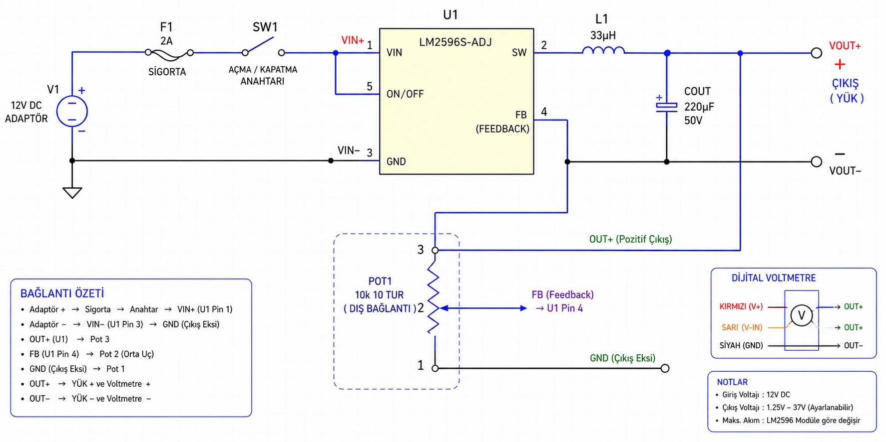
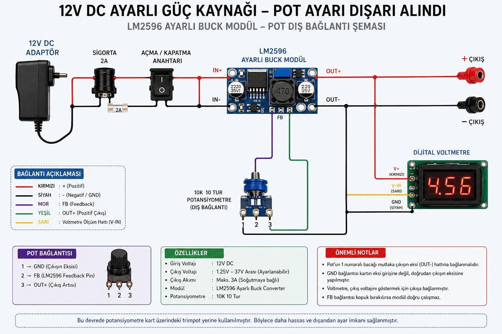
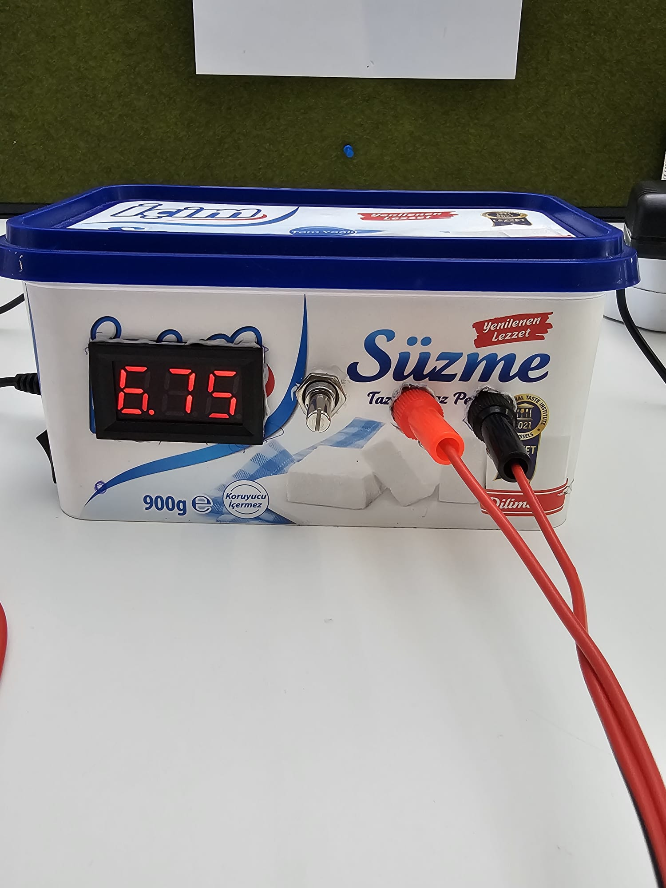
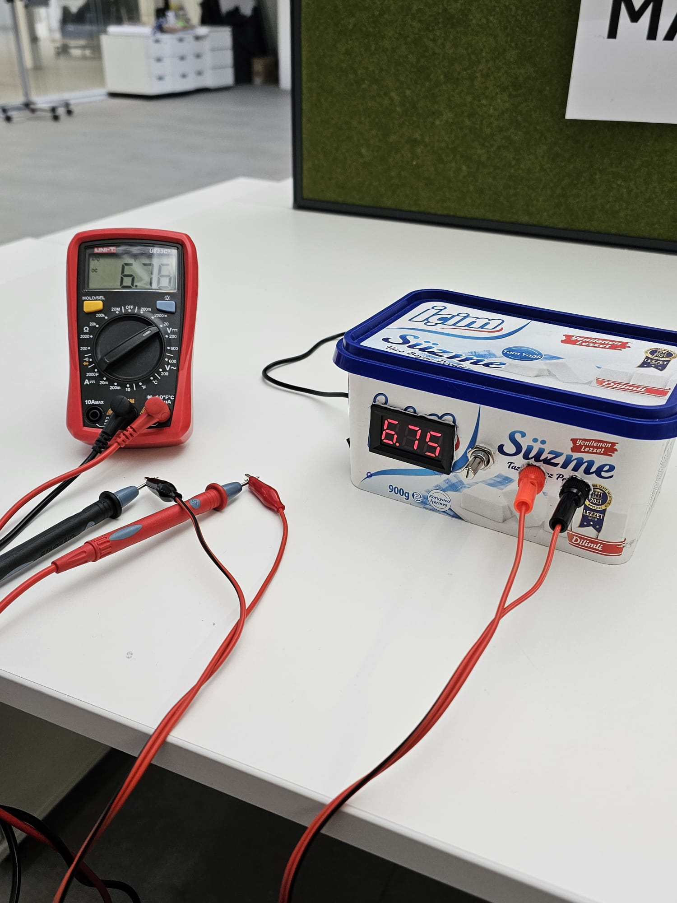
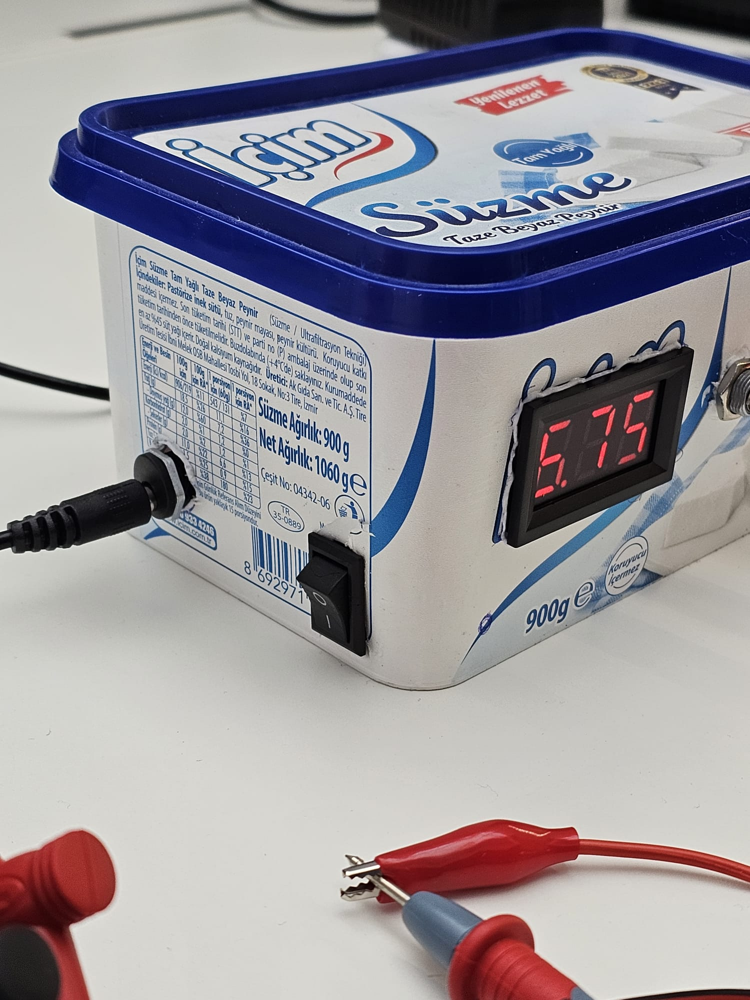

Son zamanlarda hem günlük kullanımda işime yarayacak hem de elektronik bilgimi geliştirecek bir proje yapmak istedim. LM2596 tabanlı ayarlanabilir bir DC güç kaynağı tasarladım. Standart LM2596 modüller üzerinde küçük bir trimpot bulunuyor — hem çok küçük olduğu için kullanımı zor hem de hassas ayar için tornavida gerekiyor. Ben de bu trimpotu sökerek yerine dışarıdan çevrilebilen 10 tur hassas potansiyometre bağlamaya karar verdim.

Giriş kaynağı olarak 12V DC adaptör kullandım. Adaptörden gelen enerji önce DC giriş soketine, ardından sigortaya ve açma-kapama anahtarına bağlandı. Anahtardan sonra hat LM2596 modülünün girişine verildi. Çıkış tarafında pozitif ve negatif terminaller ile anlık voltajı görmek için dijital voltmetre ekranı ekledim.

En öğretici kısım karşılaştığım sorunlardı. İlk olarak lehim telimin kalitesiz olması yüzünden potansiyometreye gereğinden fazla ısı uyguladım ve pot kullanılamaz hale geldi. Yeni bir potansiyometre aldım, daha kaliteli lehim teli kullandım. Ama devre hâlâ çalışmıyordu.
Sorun pin bağlantısındaydı. Her potansiyometrede numaralandırma aynı görünse de orta ucun ve dış uçların fiziksel sırası modele göre değişebiliyor. Multimetre ile ölçüm yaparak gerçek pin yapısını belirledim.
Bir sorun daha vardı: lehimleme sırasında kartın GND padini zedelemiştim. Bu yüzden GND bağlantısını karttan değil, doğrudan çıkışın negatif ucundan aldım — buck converter devrelerinde çıkış eksi ile sistem GND ortaktır. Bu bağlantıyı yaptıktan sonra sistem tamamen düzgün çalışmaya başladı.

Sistem çalışır hale gelince multimetre ile doğrulama yaptım. Cihazın kendi ekranı ile multimetre aynı değeri gösteriyordu — kalibrasyon sorunsuz.

Elimde bulunan eski bir süzme peynir kabını değerlendirdim ve cihaz kasası olarak kullandım. Normalde mutfakta görev yapan bu kahraman, kariyer değiştirerek artık masaüstünde güç elektroniği alanında hizmet veriyor.

Bu proje bana lehim kalitesinin önemini, fazla ısının bileşenlere zarar verebileceğini, pin numaralarına körü körüne güvenmek yerine ölçüm yapılması gerektiğini ve datasheet okumanın ne kadar kritik olduğunu öğretti. Bazen sorun yeni parça almakla değil, devrenin mantığını anlayarak çözülüyor.
Gelecekte akım ölçer, fan soğutma ve USB çıkış eklemeyi düşünüyorum. Bu çalışma benim için sadece bir devre değil, gerçek bir problem çözme pratiği oldu.